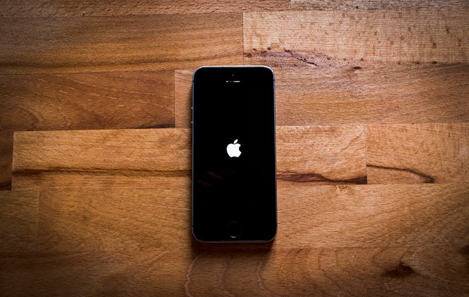
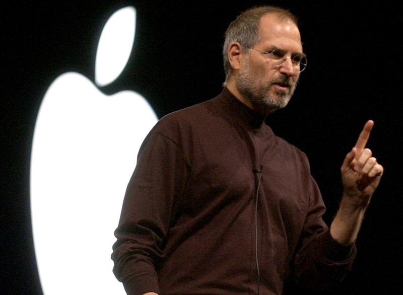
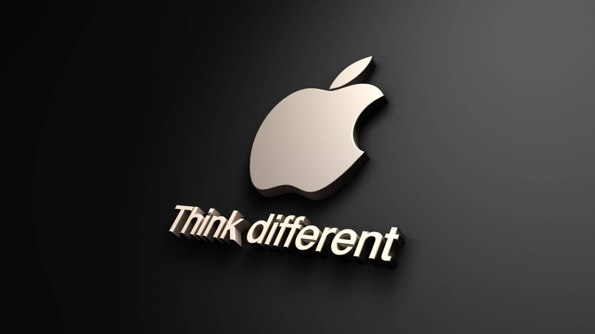
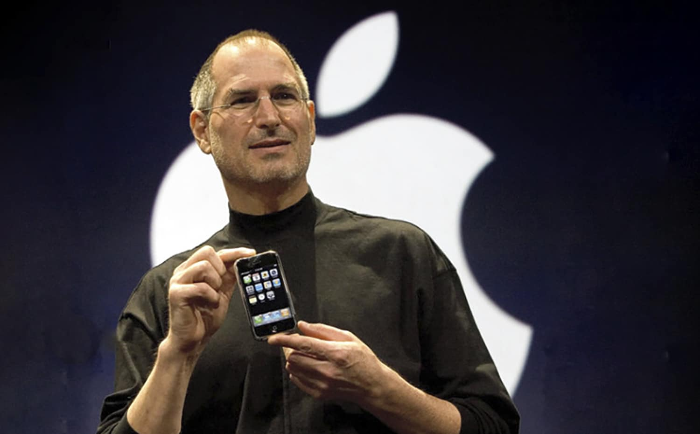
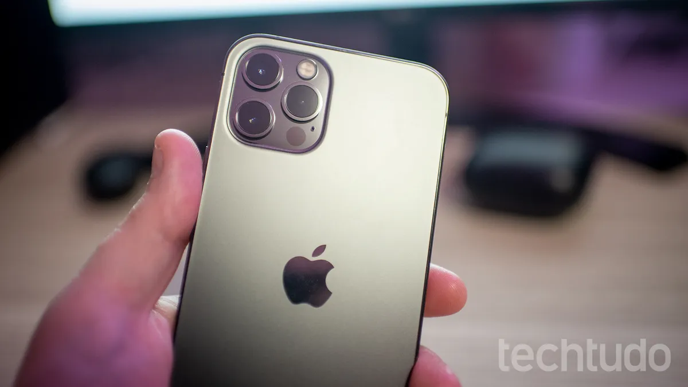

A Revolução: 🏆
A fundação do iOS marcou um ponto de virada na história da tecnologia móvel. Desenvolvido pela Apple, foi lançado inicialmente em 29 de junho de 2007 📆, sendo um sistema operacional com muito potencial, desenvolvido junto com o primeiro iPhone. Este artigo explora os eventos que levaram à criação do iOS, seu impacto inicial e sua evolução ao longo dos anos.
tempo médio de leitura:3 minutos

A Apple não é apenas uma fabricante de dispositivos; ela atua como uma instituição de design e inovação que redefine comportamentos globais. Desde sua origem na garagem de Los Altos, a empresa cultiva a filosofia de que o hardware deve ser invisível e a experiência, absoluta. Essa mentalidade de "pensar diferente" culminou em 2007, quando Steve Jobs subiu ao palco para apresentar não apenas um telefone, mas uma trindade tecnológica: um iPod de tela larga, um telefone revolucionário e um comunicador de internet inovador.
O Nascimento do iOS
A ideia começou a tomar forma na Apple durante o início dos anos 2000. Steve Jobs, cofundador da empresa, vislumbrou um dispositivo que combinasse um telefone celular, um iPod com tela sensível ao toque e um comunicador de internet. O objetivo era criar uma experiência de usuário que fosse simples e poderosa. A Apple recrutou uma equipe de engenheiros e designers talentosos para transformar essa visão em realidade e integração perfeita com o hardware.
A equipe de desenvolvimento, liderada por Scott Forstall, começou a trabalhar no projeto, inicialmente conhecido como "iPhone OS". Em 9 de janeiro de 2007, durante a Macworld Conference & Expo, Steve Jobs apresentou o primeiro iPhone ao mundo, demonstrando suas capacidades revolucionárias e a interface de usuário do iOS com uma tela multi-touch.

Impacto Cultural e Econômico 📈
O impacto do iPhone vai além da tecnologia; ele influenciou profundamente a cultura e a economia global. A App Store criou um ecossistema vibrante de aplicativos, impulsionando a economia digital e gerando oportunidades em todo o mundo.
Culturalmente, o iPhone transformou o consumo de mídia, se tornou parte essencial do nosso cotidiano, através da plataforma iOS.
O impacto econômico citado ganha força com a ascensão da Gig Economy. Sem a infraestrutura do iPhone e da App Store, empresas como Uber, iFood e Airbnb teriam dificuldade em existir. O smartphone transformou o dispositivo em uma ferramenta de trabalho em tempo real, conectando prestadores de serviço e consumidores via geolocalização.
Além do sucesso comercial, o iPhone foi o epicentro de uma mudança comportamental: a transição da computação de mesa para a computação ubíqua.
Ao consolidar múltiplas ferramentas em um único dispositivo intuitivo, a Apple não apenas simplificou a tecnologia, mas redefiniu a forma como interagimos com o mundo ao nosso redor.
No campo econômico, a App Store funcionou como um motor de inovação, permitindo que pequenas startups escalassem globalmente de forma sem precedentes, enquanto, no campo social, o dispositivo moldou uma nova linguagem visual e digital que hoje define a identidade das gerações conectadas.
O iOS trouxe inovações que revolucionaram os sistemas operacionais: 📱

Interface de Usuário Multi-Touch: Permitia aos usuários interagir com o dispositivo através de gestos, como deslizar, pinçar e tocar.
Apple store: Lançada em 2008, a App Store revolucionou a distribuição de software, permitindo a distribuição de aplicativos diretamente para os usuários.
Segurança e Privacidade: 🔒 Desde o início, o iOS foi projetado para ser seguro, incorporando recursos como a criptografia de dados e permissões rigorosas de aplicativos.
Integração de Hardware e Software: A integração estreita entre o hardware do iPhone e o software iOS proporcionou uma experiência de usuário otimizada, destacando-se da concorrência.
Conclusão
A titã do iOS estabeleceu um novo paradigma de interação humano-computador, introduzindo o conceito de computação ubíqua na palma da mão. Ao substituir teclados físicos por uma interface baseada em gestos e manipulação direta, a Apple não apenas lançou um software, mas definiu os padrões de UX (User Experience) que hoje são universais.

A arquitetura robusta do sistema, derivada do Unix, permitiu uma estabilidade de nível industrial em dispositivos móveis, enquanto a introdução de linguagens modernas como o Swift revolucionou a eficiência e a segurança no desenvolvimento de aplicações. Com bilhões de dispositivos ativos, o ecossistema iOS transcendeu a função de sistema operacional para se tornar uma infraestrutura global de serviços integrados, refletindo a visão pioneira de criar tecnologia que enriquece a vida das pessoas através da simplicidade e da performance.
A fundação do iOS estabeleceu novos padrões para sistemas operacionais móveis e revolucionando a maneira como interagimos com dispositivos móveis. Desde sua introdução, o iOS não só moldou a indústria de smartphones, mas também influenciou o desenvolvimento de novos produtos e serviços. Hoje, com bilhões de dispositivos em uso, o iOS é um pilar fundamental da tecnologia, refletindo a visão pioneira da Apple de criar aquilo que enriquece a vida das pessoas.
